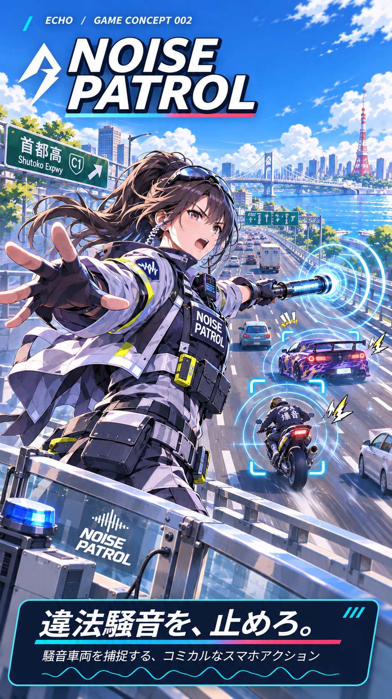
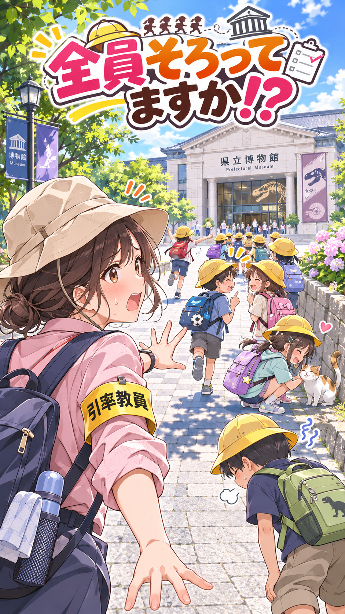
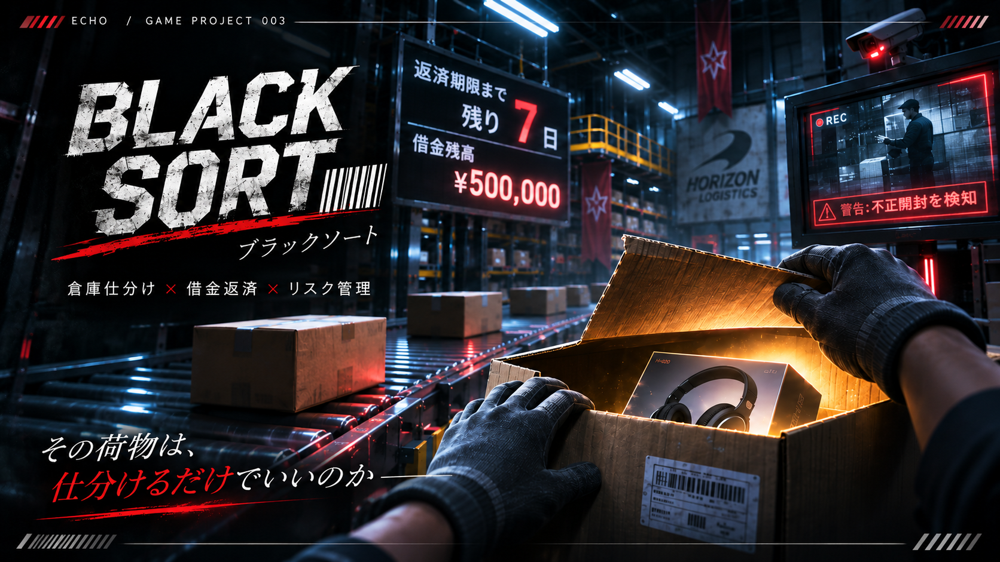
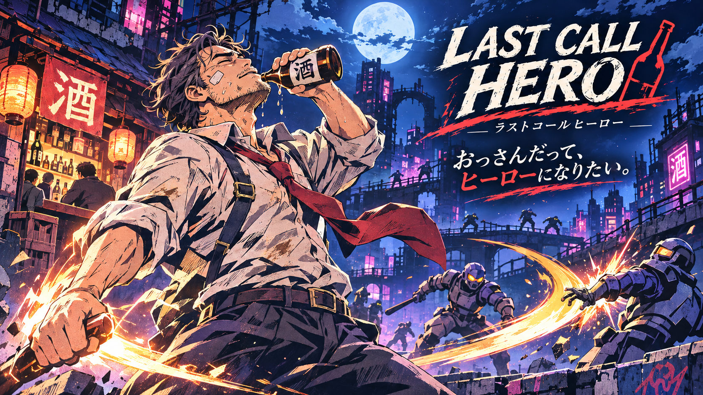
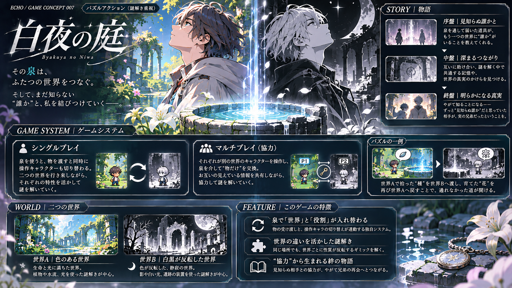
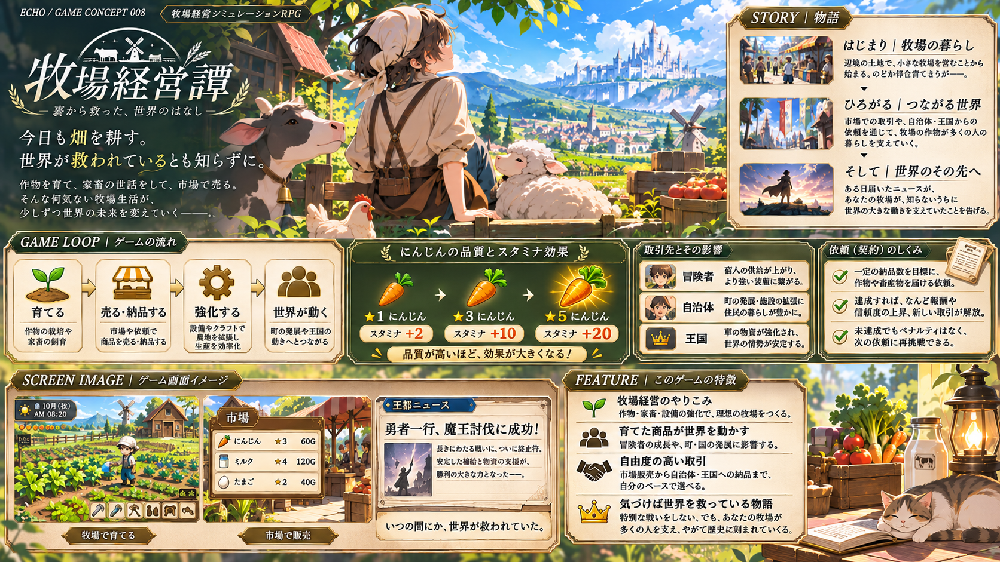
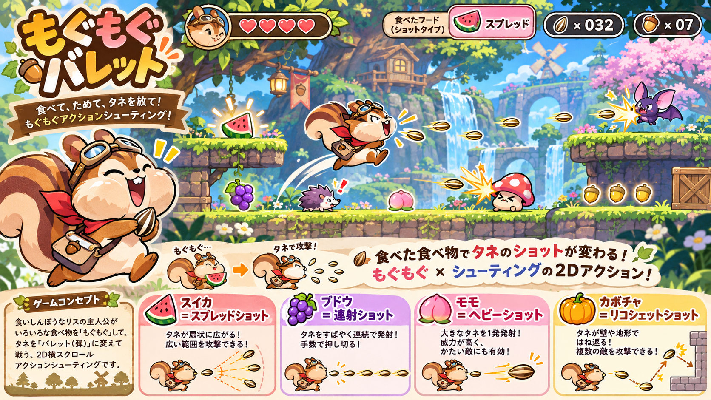

TRACK 01
RE:CORD
自主制作ゲームPV / 企画・映像作品
ECHO ARCHIVE / CREATIVE WORKS
次は、どの世界をのぞく？
TRACK 01
企画・構成・映像表現にこだわった主な制作作品。
02 / ALL WORKS
ゲーム・映像・グラフィック・Webなどの制作作品。
見下ろし型・校外学習引率ゲーム / 自主企画
※ゲーム画面イラストには生成AIを使用しています。
4vs4・ラウンド制戦術FPS / 自主企画
※ゲーム画面イラストには生成AIを使用しています。
食べて撃つアクションシューティング / 自主企画
※ゲーム画面イラストには生成AIを使用しています。
謎解き重視のパズルアクション / 自主企画
※ゲーム画面イラストには生成AIを使用しています。
コミカル取締シューティング / 自主企画
※ゲーム画面イラストには生成AIを使用しています。
一人称視点・倉庫仕分けシミュレーション / 自主企画
※ゲーム画面イラストには生成AIを使用しています。
横スクロールアクション / 自主企画
※ゲーム画面イラストには生成AIを使用しています。
牧場経営シミュレーションRPG / 自主企画
※ゲーム画面イラストには生成AIを使用しています。
お化け屋敷制作・運営ホラー / 自主企画
※ゲーム画面イラストには生成AIを使用しています。
01 / LONG FORM
02 / SHORT FORM
※背景の花のイラストには生成AIを使用しています。
※キャラクターイラストには生成AIを使用しています。
※一部のイラストには生成AIを使用しています。
VIDEO / CITY PROMOTION
夜の浅草を題材に、街紹介PV。 雷門から浅草寺、五重塔へ展開し、 夜の街並みの雰囲気を伝える作品。
BGMのリズムに合わせたカットの切り替えや 速度調整を行い、映像に流れをつけた。 また、色調整によって夜景の雰囲気を整え、 一つの映像として統一感が出るように工夫した。
構成・映像編集・色調整を担当。
VIDEOを見る ↗VIDEO / VLOG
東京駅から始める一日を題材に、 街の様子をVlog風にまとめた映像作品。 観光地そのものだけでなく、 街を歩く体験や空気感を伝えることを 目指した。
一日の流れが自然に伝わるように、 場面の順番や映像の切り替えを意識。 視聴者が一緒に街を巡っているように 感じられる構成を目指した。
東京を題材にした映像作品。 構成・映像編集を中心に制作。
VIDEOを見る ↗GRAPHIC DESIGN / LOGO
「Beautiful Flower」をテーマに制作した ロゴデザイン作品。 ロゴ単体だけでなく、背景と組み合わせた ビジュアル展開まで制作した。
ロゴと背景の花のイラストを組み合わせ、 画面全体の統一感を意識した。 ロゴの見せ方やビジュアルとのバランスを 考えながらデザインした。
ロゴデザイン・ビジュアル構成を制作。 背景の花のイラストには生成AIを使用。
GRAPHIC DESIGN / POSTER
架空の店舗「SAVE POINT」の 新店舗オープン告知と、メニュー紹介を目的とした ポスターデザイン。 表面と裏面を使い、店舗の情報と 商品の魅力を伝える構成にした。
新店舗のオープン情報とメニュー紹介を それぞれ分かりやすく伝えるため、 掲載する情報やレイアウトを整理した。 2つの面を通して、 ひとつの店舗として統一感のある ビジュアルを目指した。
ポスターの情報構成・レイアウト・ グラフィックデザインを制作。 キャラクターイラストには生成AIを使用。
GRAPHIC DESIGN / ICON
複数のアイコンを制作した グラフィックデザイン作品。 形や色、情報の伝わり方を考える デザインの練習として制作した。
小さなサイズでも内容が伝わるように、 シンプルな形と視認性を意識。 アイコン同士の見た目の統一感にも 配慮した。
アイコンの形状・配色・ グラフィックデザインを制作。
GRAPHIC DESIGN / CHARACTER
オリジナルキャラクター「杉樽くん」の デザイン作品。 キャラクターとして個性を 視覚的に表現することをテーマに制作した。
キャラクターの特徴が伝わるように、 シルエットや表情、全体のバランスを 意識したデザインを検討した。
オリジナルキャラクターの ビジュアルデザインを制作。
VIDEO / TRAVEL PR
家族旅行を検討している人に向けた ハワイの旅行PR映像。 子どもが「行ってみたい」と感じ、 保護者も旅行の魅力をイメージできる 映像を目指した。
ゲームの選択画面をイメージしたUI演出を取り入れ、 視聴者が次の展開を楽しめる構成にした。 海・山・食べ物・生き物など、 ハワイのさまざまな魅力を紹介し、 最後は夕日の映像で締めくくった。
企画・構成・映像編集・UI演出を担当。
VIDEOを見る ↗GRAPHIC DESIGN / CORPORATE SERIES

架空の企業グループ「FRAME」を設定し、 4つの事業に合わせたバナーを制作した 企業バナーデザイン。 映像作品・Webデザイン・SNS広告・音楽制作の 異なる事業を、ひとつのグループとして展開した。
それぞれの事業内容が伝わるように、 バナーごとに扱う情報やビジュアルを構成。 4つの事業をひとつのシリーズとして 見せることを意識した。
架空企業の設定・情報構成・ バナー4作品のグラフィックデザインを制作。
VIDEO / SHORT MOVIE
夏のメニューを紹介することを目的とした 短尺のプロモーション映像。 季節感を取り入れながら、 メニューの魅力を伝える作品。
夏らしさが伝わるビジュアルを取り入れ、 短い映像の中でメニューの情報を 見やすく伝えることを意識した。
サマーメニュー紹介動画の 映像編集・ビジュアル構成を制作。
VIDEOを見る ↗WEB DESIGN / EVENT PLANNING
「音楽との新しい出会い」をテーマに企画した、 VRChat上で開催する架空の音楽フェスのLP。 ジャンルの異なる音楽と人が交わる体験を表現した。
ロック・ボカロ・DJ・アイドルの4ジャンルを 異なる惑星に見立て、イベントの世界観を構築。 また、VRchat初心者でも参加できるように、 イベント紹介から参加方法までの導線を設計した。
架空イベントの企画、LPの情報設計、 ビジュアルデザインを制作。 一部イラストには生成AIを使用。
下へスクロールしてデザインをご覧いただけます。 画像をクリックすると拡大もできます。
GAME / ORIGINAL GAME CONCEPT

※掲載画像はゲームの企画イメージです。 イラストには生成AIを使用しています。 実際に動作するゲームの画面ではありません。
騒音をまき散らす車両を取り締まる、 スマートフォン向けのコミカルシューティングゲーム企画。 直観的な操作と爽快感を重視した作品。
目の前に現れる騒音車両を狙って制圧する。 リロード中は攻撃できないため、 狙うタイミングを考えることが重要になる。
シンプルな操作で楽しめるゲーム性と、 リロードによる判断要素を組み合わせた。 コミカルな世界観とテンポの良い体験を意識した。
オリジナルゲームの企画・コンセプト設計。 スマートフォン向けゲームとして構想。
GAME / ORIGINAL GAME CONCEPT

※掲載画像はゲームの企画イメージです。 イラストには生成AIを使用しています。 実際に動作するゲームの画面ではありません。
校外学習の最後尾を担当する先生となり、 児童全員を目的地まで引率する 見下ろし型のゲーム企画。 自由気ままな児童たちを見守りながら、 全員そろっての到着を目指す作品。
プレイヤーは列の最後尾から児童たちを見守り、 声をかけたり、乱れた列を整えたりしながら進む。 児童の学年によって難易度が変化し、 低学年ほど引率が難しくなる。
次々と起こる列の乱れに対して、 どの児童を優先して注意するかを考える ドタバタ感をゲームの面白さにした。 また、学級委員長によるお助け効果を設け、 列の乱れを軽減できる仕組みも考案した。
オリジナルゲームの企画・コンセプト設計。 基本ルール、難易度の変化、 お助けシステムなどを構想。
GAME / ORIGINAL GAME CONCEPT

※掲載画像はゲームの企画イメージです。 イラストには生成AIを使用しています。 実際に動作するゲームの画面ではありません。
多額の借金を抱えた主人公が、 巨大物流倉庫で働きながら返済を目指す、 PC向けの一人称視点シミュレーションゲーム企画。 正規の仕事を続けるか、 不正による高収入を狙うか。 プレイヤーの判断が運命を左右する。
ベルトコンベヤーで流れてくる荷物を確認し、 配送先に応じて正しいレーンへ仕分けていく。 荷物を開封して中身を転売することもできるが、 不正が発覚するとゲームオーバー。 残り日数と収入を管理しながら、 期限内の借金完済を目指す。
正規の仕分け作業でも借金返済を達成できる一方、 不正を行えば短期間で大きな収入を得られる。 しかし、発覚すればすべてを失う。 日常的な倉庫作業にリスクと誘惑を組み込み、 プレイヤー自身の選択が緊張感を生む ゲーム体験を目指した。
オリジナルゲームの企画・コンセプト設計。 仕分け作業、荷物の開封判断、 借金返済システムなどを構想。
GAME / ORIGINAL GAME CONCEPT

※掲載画像はゲームの企画イメージです。 イラストには生成AIを使用しています。 実際に動作するゲームの画面ではありません。
「強い一人より、強い組み合わせ。」をテーマにした、 4vs4のラウンド制戦術FPSゲーム企画。 個人の撃ち合いだけでなく、 チームの役割分担と編成によって 勝利を目指す対戦ゲーム。
7種類のロールから4人のチームを編成し、 相手チームとラウンド制で対戦する。 ラウンドごとに編成を変更できるため、 相手の戦術や戦場の状況に合わせて チームの戦い方を組み替えていく。
妨害・職人・情報・一発逆転など、 特徴の異なるロールの組み合わせを重視した。 また、前のラウンドで起きた戦場の変化が 次のラウンドにも残る仕組みを取り入れ、 ラウンドを重ねることで戦術が変化する ゲーム体験を目指した。
オリジナルゲームの企画・コンセプト設計。 ロール構成、チーム編成の変更、 ラウンド間で継続する戦場変化などを構想。
GAME / ORIGINAL GAME CONCEPT

※掲載画像はゲームの企画イメージです。 イラストには生成AIを使用しています。 実際に動作するゲームの画面ではありません。
「おっさんだって、ヒーローになりたい。」 人生にくたびれた中年男が、 世界の危機に立ち向かう横スクロールアクション企画。 お酒の力を借りながら、誰かを守るために戦う。
ステージ内でお酒を見つけ、飲んで強化しながら 敵を倒して進んでいく。 飲酒によって攻撃力や防御力が上昇する一方、 飲みすぎると操作反転・移動速度低下・ 視界のゆがみなどが発生する。
「飲むほど強くなるが、飲みすぎると戦いにくくなる」 というリスクとリターンをゲーム性の中心に設計。 酔いゲージを見ながら、どこまで強化するかを プレイヤー自身が判断する駆け引きを考案した。
オリジナルゲームの企画・コンセプト設計。 世界観、キャラクター設定、基本ルール、 酔いゲージによる状態変化などを構想。
GAME / ORIGINAL GAME CONCEPT

※掲載画像はゲームの企画イメージです。 イラストには生成AIを使用しています。 実際に動作するゲームの画面ではありません。
色彩豊かな世界と、白黒が反転した世界。 泉によってつながるふたつの世界を舞台に、 謎を解きながら物語を進めるパズルアクション企画。 見知らぬ相手との協力を通じて、 ふたつの世界と登場人物に隠された真実に迫る。
ふたつの世界で異なる性質や仕組みを利用し、 泉を通じてアイテムを受け渡しながら謎を解く。 シングルプレイでは、 泉を使用するとアイテムの受け渡しと同時に 操作キャラクターが切り替わる。 マルチプレイでは、 それぞれが別の世界のキャラクターを操作し、 泉を通じてアイテムだけを交換。 情報を共有しながら協力して進んでいく。
ふたつの世界の違いを、 ビジュアルだけでなく謎解きにも取り入れた。 例えば、一方の世界で手に入れた種を もう一方の世界で育て、 咲いた花を元の世界に戻すことで 新しい道が開かれる仕組みを考案。 また、シングルとマルチで操作方法を変えながら、 世界を越えた協力という共通の体験を目指した。
オリジナルゲームの企画・コンセプト設計。 ふたつの世界の設定、泉を介したアイテム交換。 シングル・マルチプレイの仕組み、 謎解きと物語の構成を考案。
GAME / ORIGINAL GAME CONCEPT

※掲載画像はゲームの企画イメージです。 イラストには生成AIを使用しています。 実際に動作するゲームの画面ではありません。
「今日も畑を耕す。 世界が救われているとも知らずに。」 辺境の牧場で作物を育て、家畜の世話をし、 商品を販売する牧場経営シミュレーションRPG。 何気ない牧場生活が、冒険者や町、 王国の発展を支え、 知らないうちに世界の未来を変えていく。
作物の栽培や家畜の飼育を行い、 設備やノウハウを強化して商品の品質を高める。 育てた商品は市場で販売したり、 自治体や王国からの依頼に納品したりできる。 品質の高い商品は購入者の能力や 暮らしにも影響し、 取引を通じて世界が少しずつ変化していく。
プレイヤー自身が戦わなくても、 牧場経営を通じて世界の冒険を 間接的に支えられる仕組みを考案した。 商品の品質によって価格や 購入者への効果が変化し、 牧場を育てることが世界の発展にもつながる。 牧場経営そのものの楽しさと、 自分の行動が世界に影響しているという 物語体験の両方を目指した。
オリジナルゲームの企画・コンセプト設計。 牧場経営、商品の品質、 市場販売・依頼納品、 世界への影響と物語の進行を構想。
GAME / ORIGINAL CONCEPT

※掲載画像はゲームの企画イメージです。 イラストには生成AIを使用しています。 実際に動作するゲームの画面ではありません。
自分だけのお化け屋敷を作るホラーシミュレーション。 設置したはずの仕掛けが、プレイヤーの意思とは関係なく動き始める。 「恐怖を作る側」が、いつの間にか「恐怖を体験する側」になる。
仕掛けを配置してお化け屋敷を設計し、 完成後は必ず自分でテストプレイを行う。 集客のために呪物を扱うこともできる。 また、ほかのプレイヤーが作ったマップを遊ぶことも可能。
自分で配置した仕掛けだからこそ、 その動きは把握しているはず。 しかし、その仕掛けが勝手に動き出すことで、 「知っている場所のはずなのに怖い」 という体験を生み出す構成を考えた。 制作とテストプレイの切り替わりが、 ゲームの恐怖につながる。
オリジナルゲームの企画・コンセプト設計。 お化け屋敷の制作、必須のテストプレイ、 呪物を使った集客、 プレイヤーが制作したマップの体験などを構想。
GAME / ORIGINAL GAME CONCEPT

※掲載画像はゲームの企画イメージです。 イラストには生成AIを使用しています。 実際に動作するゲームの画面ではありません。
「食べて、ためて、撃ちまくれ！」 食いしん坊のシマリスが主人公の 2D横スクロールシューティングゲーム。 ステージに登場する果物や野菜を食べ、 その種を口から発射して戦う。 食べたものによって攻撃方法が変化する、 食べることと撃つことを組み合わせゲーム。
ステージを探索して果物や野菜を食べ、 頬にため込んだ種を種を弾として発射する。 食べるとシマリスの頬が膨らみ、 弾を撃つたびに小さくなっていく。 食材ごとに弾の性能が変化する。 スイカは散弾、 ブドウは連射、 モモは重量弾、 カボチャは跳弾。 状況に応じて食べるものを選び、 攻撃方法を切り替えながら進んでいく。
「食べる」という行動を、 攻撃手段の獲得と結びつけたゲームシステム。 食べるとシマリスの頬が膨らみ、 撃つと小さくなる視覚的な変化によって、 弾の消費を直感的に表現する。 また、食材によって攻撃性能を変えることで、 食べ物を探す行動そのものが、 ステージ攻略につながる仕組みを考案した。
オリジナルゲームの企画・コンセプト設計。 主人公のキャラクター設定、 食材ごとの弾の性能、 頬の変化による弾数表現、 シューティングの仕組みを構想。